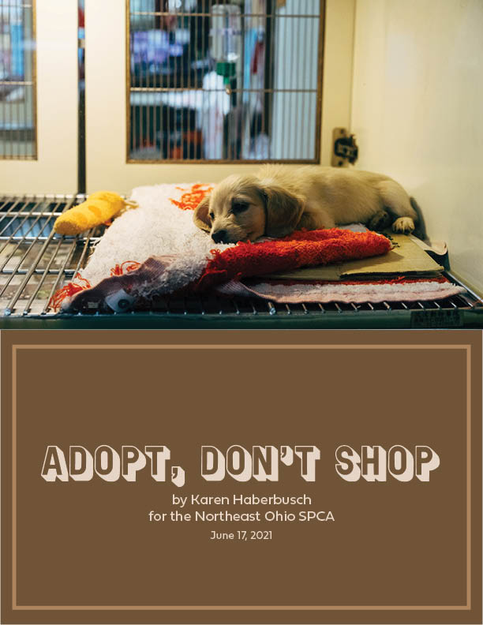
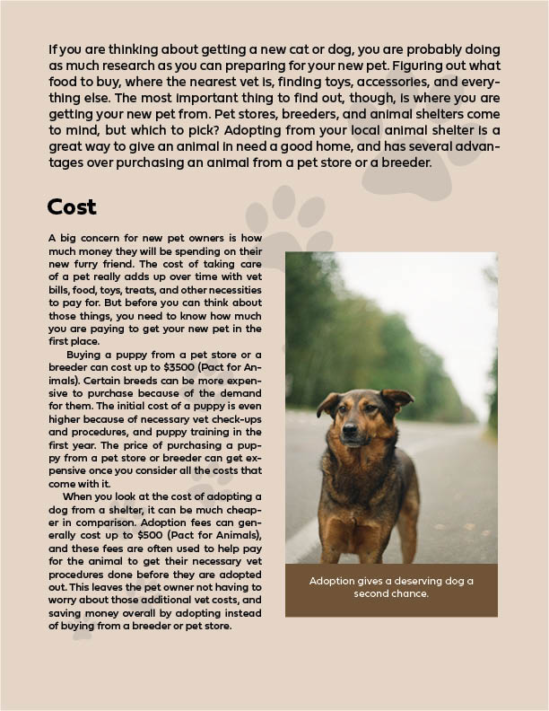
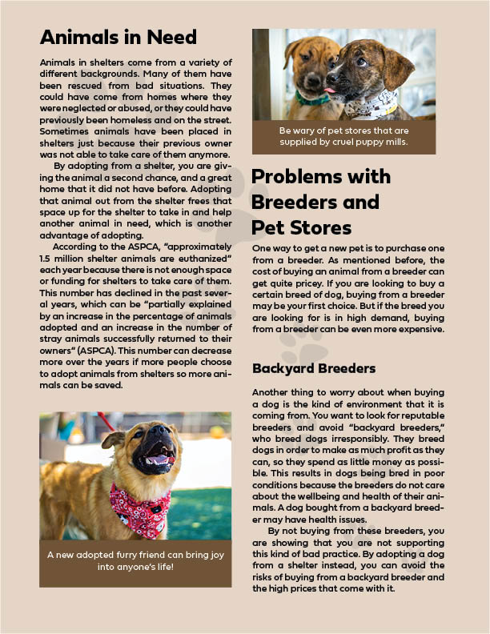
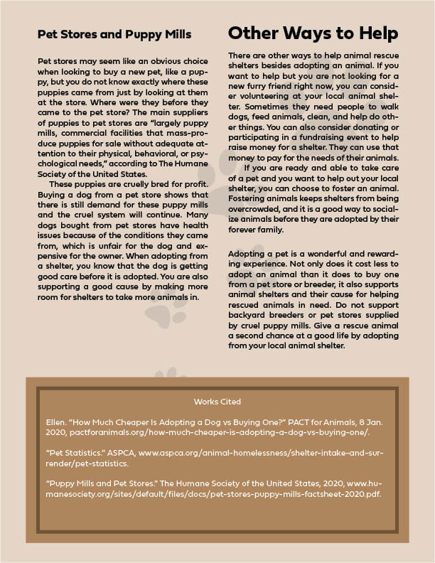
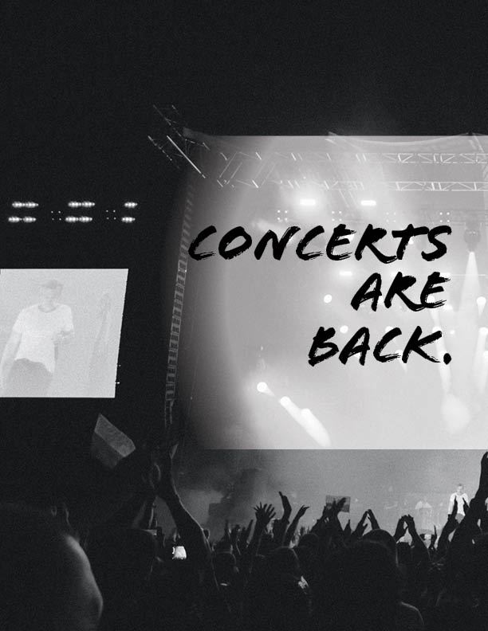
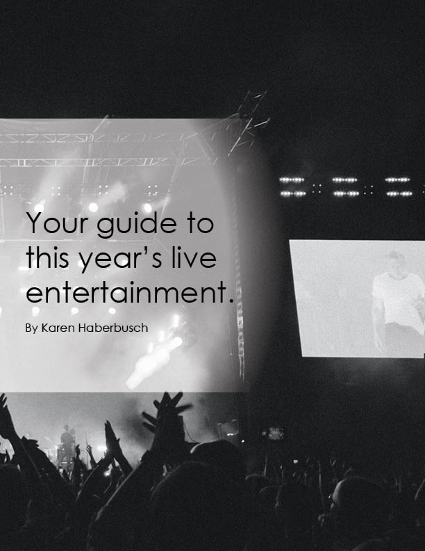

Design Projects
These are a few of the projects I worked on in the summer of 2021 for a class called Integrating Writing and Design. They were created using Adobe InDesign. This class made me realize how much I love designing, and helped me develop design skills I can carry into other areas.





